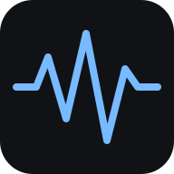

OpenWave 🔔
Stay connected. No scrolling required. Choose what you want to hear about.
On iPhone or iPad, use Safari → Share → Add to Home Screen, then open OpenWave from the Home Screen.
Loading notification settings…
No OpenWave account or email required. Preferences apply to this browser/device. Notifications may appear on your lock screen.